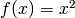
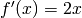

Extending PyBrain’s structure¶
In Building Networks with Modules and Connections we have learned that networks can be constructed as a directed acyclic graph, with Module instances taking the role of nodes and Connection instances being the edges between those nodes.
In this tutorial, we will show how to implement new structural types, so we can use them in networks.
Layers¶
We will now show how to implement new types of layers, which are a very simple form of a module. They can be used to implement transfer functions, resulting in special layers such as the SigmoidLayer.
The NeuronLayer class serves as a base class for all types of layers. Let’s have a look at how a very basic layer, the LinearLayer looks like and implement a specific new type afterwards:
from neuronlayer import NeuronLayer
class LinearLayer(NeuronLayer):
""" The simplest kind of module, not doing any transformation. """
def _forwardImplementation(self, inbuf, outbuf):
outbuf[:] = inbuf
def _backwardImplementation(self, outerr, inerr, outbuf, inbuf):
inerr[:] = outerr
As we can see, Layer class relies on two methods: _forwardImplementation() and _backwardImplementation(). (Note the leading underscores which are a Python convention to indicate pseudo-private methods.)
The first method takes two arguments, inbuf and outbuf. Both are Scipy arrays of the size of the layer’s input and output dimension respectively. The arrays have already been created for us. The pybrain structure framework now expects us to produce an output from the input and put it into outbuf in place.
Note
Manipulating an array in place with SciPy works via the [:] operator. Given an array a, the line a[:] = b will overwrite a‘s memory with the contents of b.
The second method is used to calculate the derivative of the output error with respect to the input. From standard texts on neural networks, we know that the error of a unit (which is a field in a layer in our case) can be calculated as the derivative of the unit’s transfer function’s applied to the units input multiplied with the error. In the case of the identity, the derivative is a constant 1 and thus backpropagating the error is nothing but just copying it.
Thus, any _backwardImplementation() implementation must fill inerror correctly.
An example: quadratic polynomial as transfer function¶
For the sake of simplicity, let’s implement a layer that uses  as a transfer function. The derivative is then given by .
Let’s start out with the pure skeleton of the class:
from pybrain.structure.modules.neuronlayer import NeuronLayer
class QuadraticPolynomialLayer(NeuronLayer):
def _forwardImplementation(self, inbuf, outbuf):
pass
def _backwardImplementation(self, outerr, inerr, outbuf, inbuf):
pass
The current methods don’t do anything, so let’s implement one after the other.
Using SciPy, we can use most of Python’s arithmetic syntax directly on the array and it is applied component wise to it. Thus, to get the square of an array a we can just call a**2. Thus:
def _forwardImplementation(self, inbuf, outbuf):
outbuf[:] = inbuf**2
Remembering Neural Networks 101, we can implement the derivative as such:
def _backwardImplementation(self, outerr, inerr, outbuf, inbuf):
inerr[:] = 2 * inbuf * outerr
Further readings: Layers can be used in numerous different ways. The interested reader is referred to the source code of the LSTMLayer and the mailing list for further help.
Connections¶
A Connection works similarly to a Layer in many ways. The key difference is that a Connection processes data it does not “own”, meaning that their primary task is to shift data from one node of the network graph to another.
The API is similar to that of Layers, having _forwardImplementation() and _backwardImplementation() methods. However, sanity checks are performed in the constructors mostly to assure that the modules connected can actually be connected.
As an example, we will now have a look at the IdentityConnection and afterwards implement a trivial example.
IdentityConnections are just pushing the output of one module into the input of another. They do not transform it in any way.
1 2 3 4 5 6 7 8 9 10 11 12 13 14 15 16 17 | from connection import Connection
class IdentityConnection(Connection):
"""Connection which connects the i'th element from the first module's output
buffer to the i'th element of the second module's input buffer."""
def __init__(self, *args, **kwargs):
Connection.__init__(self, *args, **kwargs)
assert self.indim == self.outdim, \
"Indim (%i) does not equal outdim (%i)" % (
self.indim, self.outdim)
def _forwardImplementation(self, inbuf, outbuf):
outbuf += inbuf
def _backwardImplementation(self, outerr, inerr, inbuf):
inerr += outerr
|
The constructor basically does two things. First, it calls the constructor of the superclass in order to perform any bookkeeping. After that, it asserts that the incoming and the outgoing module (the modules that are connected by the connection) are actually compatible, which means that the input dimension of the outgoing module equals the output dimension of the incoming module.
The _forwardImplementation() is called with the output buffer of the incoming module, depicted as inbuf, and the input buffer of the outgoing module, called outbuf. You can think of the two as a source and a sink. Mind that in line #14, we actually do not overwrite the buffer but instead perform an addition. This is because there might be other modules connected to the outgoing module. The buffers will be overwritten with by the Network instance containing the modules and connections.
The _backwardImplementation() works similarly. However, connections do also get the inbuf buffer since in some cases (like FullConnection instances) it is necessary to calculate derivatives in order to adapt parameters.
ParameterContainers¶
In all neural networks, you want adaptable parameters that can be trained by an external learning algorithm. Structure that holds those parameters are realized via subclassing ParameterContainer. Due to Python’s ability of multiple inheritance, you can just add this to the list of your subclasses. We will now look at this with the FullConnection as an example. The linear connection is a connection which connects two layers and processes the data by multiplication with a weight matrix. This kind of connection is the most common in neural networks.
1 2 3 4 5 6 7 8 9 10 11 12 13 14 15 16 17 18 | from scipy import reshape, dot, outer
from connection import Connection
from pybrain.structure.parametercontainer import ParameterContainer
class FullConnection(Connection, ParameterContainer):
def __init__(self, *args, **kwargs):
Connection.__init__(self, *args, **kwargs)
ParameterContainer.__init__(self, self.indim*self.outdim)
def _forwardImplementation(self, inbuf, outbuf):
outbuf += dot(reshape(self.params, (self.outdim, self.indim)), inbuf)
def _backwardImplementation(self, outerr, inerr, inbuf):
inerr += dot(reshape(self.params, (self.outdim, self.indim)).T, outerr)
self.derivs += outer(inbuf, outerr).T.flatten()
|
In line 10 and 11 we can see how the superclasses’ constructors are called. ParameterContainer expects an integer argument N, which depicts the amount of parameters the FullConnection needs, which is the product of the incoming modules size and the outgoing modules size.
Due this, the constructor of ParameterContainer gives the object two fields: params and derivs which are two arrays of size N. These are used to hold parameters and possibly derivatives.
In the case of backpropagation, learning happens during calls to _backwardImplementation(). In line 18, we can see how the field derivs is modified.
Checking for correctness¶
Remembering Neural Networks 102, we know that we can check the gradients of our neural network implementation numerically. PyBrain already comes with a function that does exactly that, gradientCheck(). You can pass it any network containing a structural component you programed and it will check whether the numerical gradients are (roughly) equal to the gradient given by the _backwardImplementation() methods.
So let’s check our new QuadraticPolynomialLayer.
1 2 3 4 5 6 | from pybrain.tools.shortcuts import buildNetwork
from pybrain.tests.helpers import gradientCheck
n = buildNetwork(2, 3, 1, hiddenclass=QuadraticPolynomialLayer)
n.randomize()
gradientCheck(n)
|
First we do the necessary imports in line 1 and 2. Then we build a network with our special class in line 4. To initialize the weights of the network, we randomize its parameters in line 5 and call our gradient check in line 6. If we have done everything right, we will be rewarded with the output Perfect gradient.